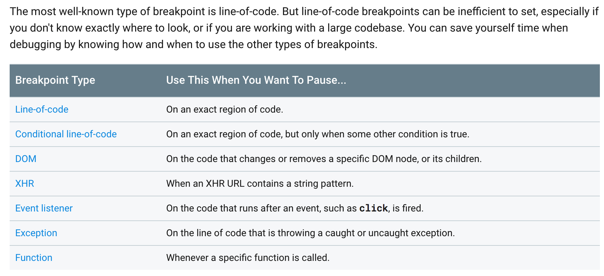

好久都没有更新博客了，之前经历了疯狂的一段加班时间，收获了下面一句话，对我来说很珍贵的经验。📒
再短也要记得思考，再忙也要记得时不时停下来，不慌不忙一步步走稳~📚
在 url 上增加参数
下面这段是一段给 url 增加参数的代码片段：1
2
3
4
5
6
7
8
9
10
11
12
13
14/**
* 在 url 上添加参数
* @param arr Array or Object
* @param url
* @return {string|*}
*/
export function addParam(arr, url) {
var names = Object.keys(arr)
var postfix = serializeParams(arr)
url = delParam(names, url)
url += /(\?|&)$/.test(url) ? "" + postfix : /\?/.test(url) ? "&" + postfix : "?" + postfix
return url
}
除去写法问题，逻辑上能看出有什么问题吗❌？
它只支持不带 hash 的增加参数，对于带 hash 的url, 它基本不能使用。因为这个方法已经被其他人使用，为了最小的改动性，可以在上面再封装一次。
1 | export function addHashParam(arr, url) { |
简单的 split 一下，再对 hash 之前的进行 addParam, 最后再拼接回去即可。
chrome breakpoints
今天又把 chrome 的 breakpoints 的文档瞟了一遍。希望自己能把下面这个图记清楚：

平时还是得刻意有意的去使用不同的类型断点形式，这样才不会如果突然事件很紧发现问题时，手忙脚乱。
比如上面这些断点类型中， Line-of-code，Conditional line-of-code，Exception 用的比较多，其他几个如 DOM, Xhr, Function 用的比较📒少。
关于网络的小知识
最近公司的网络部分打通了，对于 mac pro 而言，以前非常不好真机调试，现在非常方便了我们。去了解了下这里面的工作。
同一网段：要判断两个IP地址是不是在同一个网段，就将它们的IP地址分别与子网掩码做与运算，得到的结果一网络号，如果网络号相同，就在同一子网，否则，不在同一子网。
一般情况下，如果两个设备的 IP 地址前三位都是一样的话，就算是位于同一网段。
抓包或者真机调试需要电脑和手机在同一网段下。 现在由于网络打通，都在同一局域网内，直接手机上配置代理，连接电脑相应的端口即可。一般我们为了抓包，电脑上会装 fiddler or charles or whistle, 我这里使用 whistle 开启了一个新端口，手机就连这个端口即可抓包。
原先由于我们的手机和电脑不是同一个网络，所以才需要软AP如 小米 WIFI 这种东西去使手机和电脑在同一个网络里，进行抓包。
这里出来了一个新词，叫做 软AP。
软AP指的是：“软AP”的无线产品在市场上颇为常见，软AP就是Soft-AP，它的硬件部分就是一块标准的无线网卡，但其通过驱动程序使其提供与AP一样的信号转接、路由等功能。与传统AP相比，它的成本很低，功能上也能凑合。
简单的理解话AP 就是 AccessPoint ,是无限访问热点的简称，无限路由器可以称为 AP, 软AP 则是用软件和无线王卡结合模拟出来的。
是否需要这个软AP跟我们的网络有关系。若电脑和手机处于一个网段，就不需要软AP创建WIFI网络。若不在一个网络，就需要用到软AP软件。比如你的电脑是连的自家的WIFI,你的手机是4G网络。或者你的电脑是有限网络，手机是无线网络，那么很有可能就不在一个网段上。
在同一个局域网内是可以相互连接到对方的广播的，也可以冒认接收端来截取数据。或者混乱arp数据包，进行全部抓取。那么如何将mac和iPhone连接到同一个局域网呢？方法一，将两个设备都连接一个wifi路由器；方法二，将mac连接以太网，然后在 系统偏好设置——共享 中设置共享以太网来源的连接，然后用wifi端口共享给电脑（手机）。然后再将手机去连接电脑发散出的wifi。
总结
要对未来有信心，要对自己做的事情写的代码抱有信念，要跟随自己的心。（不是对别人的鸡汤，是对自己的鼓励，加油）🌹